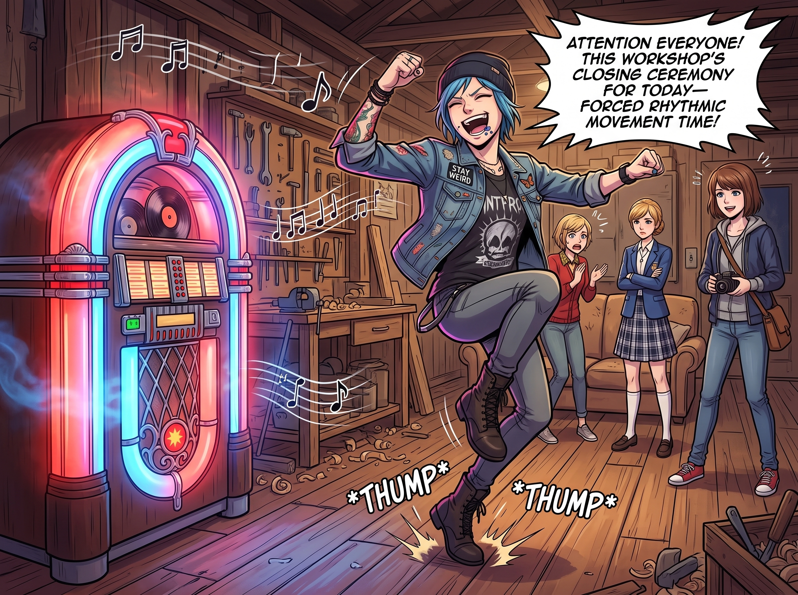

收工儀式

點唱機裡的霓虹燈管泛著紅藍交替的迷離光芒，老黑膠在唱盤上滑動，一首節奏歡快、帶著純正 70 年代摩城放克風格的復古搖滾樂瞬間炸響了整節車廂。
Bass 撥弦的渾厚律動在老橡木地板上震顫，Chloe 嘴裡的藍莓剛嚥下去，整個人就隨著節奏猛地從工作台邊彈了起來。
「全體注意！本工坊今日收工儀式——強制律動時間！」Chloe 扯著嗓子大喊，工裝靴在木地板上踩出咚咚的重音，整個人像只剛通了電的藍毛大貓，不由分說地衝向了長沙發。
「喂！Price！妳滿身都是金屬碎屑和機油味，離我的羊絨——」
Victoria 的抗議甚至還沒說完，Chloe 已經一把抓住了她的雙手，手腕一發力，硬生生把這位西雅圖名媛從單人高背椅上拽了起來，順勢在車廂中央轉了個大圈！
「放輕鬆點，Chase 總監！在老娘的地盤上，連發動機曲軸都得跟著節拍轉！」Chloe 咧嘴大笑，帶著 Victoria 踩著毫無章法卻極其狂野的舞步。
Victoria 踩著平底切爾西靴，起初整個人繃得像根鋼條，眉頭緊蹙，嘴裡咬牙切齒地罵著「野蠻人」、「毫無教養的汽修工」，但被 Chloe 帶著連續轉了兩個漂亮的急停和拋接後，名媛骨子裡從小受過的高階交際舞功底竟然被動觸發了。她優雅地揚起下巴，反客為主地用一個極其標準的花式轉身反切回節奏，甚至順手把 Chloe 的棒球帽給拍歪了，眼角終於忍不住溢出了一抹帶著無奈的明媚笑意。
「下一個輪到妳了，大天使！」Chloe 鬆開 Victoria，轉身一把撈起正在端著藍莓盤子笑得前仰後合的 Kate。
Kate 驚呼了一聲，手裡的藍莓差點飛出去，隨即被 Chloe 牽著雙手在原地轉起了圈圈。棉麻長裙在夏夜晚風中如花瓣般旋開，Kate 臉頰泛著微紅，平日裡的拘謹與安靜在這一刻徹底融化，她跟著音樂輕快地踩著小碎步，清脆的笑聲在整個車廂裡迴盪，像一串隨風搖曳的銀鈴。
「最後是妳，長官！妳休想在取景器後面當旁觀者！」
Chloe 猛地轉身，目標直指那個正端著相機、笑得眼鏡直往下掉的 Max。
「等等！Chloe！相機！相機要撞到了——」Max 連忙把相機掛繩套緊在脖子上，但下一秒整個人已經被 Chloe 攬住了腰，雙腳幾乎離地被掄了半圈。
「把鏡頭收起來，Maxine！現在妳就在畫面正中央！」
車廂裡徹底亂成了一團——點唱機的霓虹光斑在暗灰色的耐候鋼牆面、懸掛的黃銅工具和盛開的常春藤葉片上飛速旋轉跳躍。
Victoria 靠在工作台邊，手裡端著香檳杯，一邊輕輕用鞋尖打著節拍，一邊笑著看著中央那三個扭成一團的身影；Kate 牽著 Max 的手一起跳著輕快的小步舞；Chloe 則在旁邊誇張地彈著空氣吉他，時不時發出一聲暢快淋漓的尖叫。
晚風從敞開的車廂門灌進來，帶著鐵軌旁泥土與向日葵的清香，將四個女孩肆無忌憚的笑聲、凌亂的腳步聲與復古老音樂的節奏，一路送進了波特蘭星光璀璨的盛夏夜空。